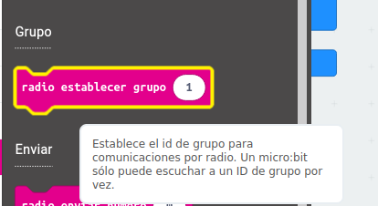
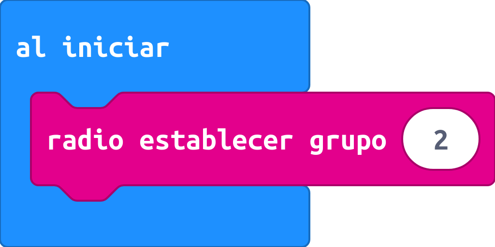
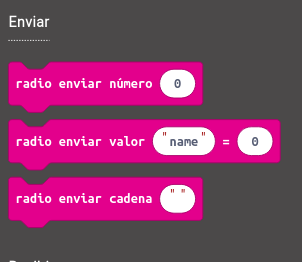
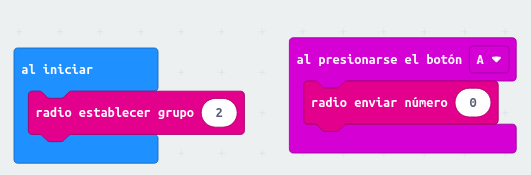
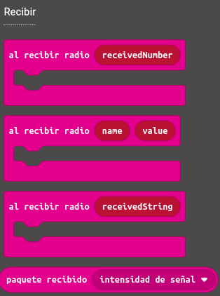
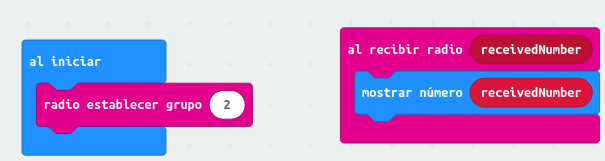
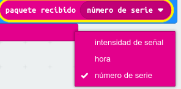
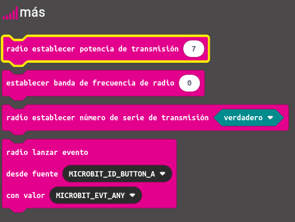
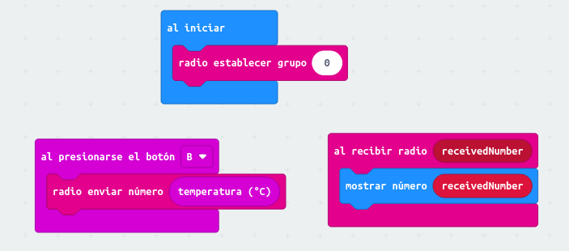

La tarjeta micro:bit puede comunicarse de forma inalámbrica con otras micro:bits usando radio. Esta tecnología inalámbrica es útil para poder enviar mensajes entre distintas tarjetas y cuando no se pueda conectar el sensor con la unidad receptora de datos mediante cable. Vamos a ver qué instrucciones podemos usar para manejar la radio en la tarjeta micro:bit que, evidentemente, están en el bloque radio. Podemos clasificarlas en tres categorías:
Grupo
Al igual que es posible cambiar el canal de emisión de un router, podemos elegir en qué grupo queremos comunicarnos entre las micro:bit. Para ello, usaremos la siguiente instrucción:

El valor del ID de grupo puede ser un número entre 0 y 255. Cuando establecemos, por ejemplo, el grupo de radio a 2, estamos diciendo que vamos a poder recibir señales de todas las micro:bit que estén emitiendo en el grupo 2. Usaremos el siguiente bloque de instrucciones:

Puedes pensar en el ID de grupo como en un número de teléfono que hay que marcar para poder comunicarse con otra tarjeta. En este caso, el número es solo un valor entre 0 y 255
Enviar
Este bloque de instrucciones permitirá enviar alguna información de una tarjeta micro:bit a otra:

Ten en cuenta que se debe haber establecido previamente el ID del grupo para que las dos tarjetas estén en el mismo grupo y puedan escucharse mutuamente. Tenemos tres valores posibles que enviar:
- Un número
- El valor de una variable (name será el nombre de la variable y 0 se cambiará por el valor que se quiera asignar)
- Un texto (o cadena de caracteres)
Estas instrucciones deberán ir dentro de otro bloque. Por ejemplo, el siguiente código envía el número 20 a otra micro:bit cuando se pulsa el botón A. Ten en cuenta que en las dos tarjetas se ha establecido como ID de grupo el 2:

Recibir
En cualquier proceso de comunicación hay un emisor y un receptor. Si anteriormente hemos visto cómo enviar un mensaje, ahora vamos a ver qué instrucciones podemos usar para recibirlo:

Si nos fijamos, existe una instrucción de recepción para cada instrucción de envío. Así, la primera instrucción de la imagen permitirá recibir un número, la segunda el nombre de una variable y su valor mientras que la tercera permitirá recibir un texto o cadena de caracteres.
Siguiendo con el ejemplo anterior, vamos a ver qué instrucciones necesitaríamos para recibir el número 0 que hemos enviado anteriormente:

En este caso, la tarjeta mostrará el número que se le ha enviado previamente
Además de los números, del texto y del par (variable, valor) podemos obtener información adicional del paquete recibido (intensidad de señal, la hora o el número de serie). Para ello, usaremos la siguiente instrucción:

Si pulsas en el botón más del bloque radio, aparecen otras instrucciones más avanzadas para el manejo de la radio:

De momento, estas instrucciones no las usaremos. Las veremos en cursos posteriores
La página de MakeCode permite simular la comunicación por radio entre dos tarjetas micro:bit. Para ello, solo hay que incluir todas las instrucciones en el panel de bloques. Prueba el siguiente ejemplo:

Responde a las siguientes preguntas:
- ¿Qué hace el programa?
- Cambia el grupo de comunicación de las tarjetas a 6
- Modifica el programa para que se muestre un icono de frío si la temperatura es inferior a 20, y un icono para el color si es superior o igual a 20